Week 3 - Day 2
Quizlet on terms from this lecture
Navigate using audio
Test 1
- In this room next Wednesday at recitation time (6:30 pm - 7:50 pm)
- Covers chapter 1, 2, and however we’ve got in 3
- This evening’s recitation is a survey to get a sense of each student’s background and how it affects their performance
- Bring a pencil
- 5 bonus points
- Audio 0:02:42.008620
Clicker question
- Audio 0:05:36.915010
- 4.21ft^3 to Liters
- 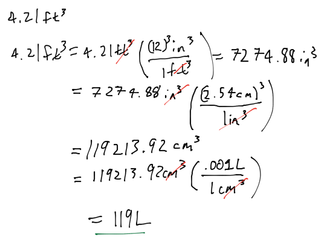
2nd Question
- Audio 0:11:49.252666
- How many atoms are in a sample of copper with volume of 0.475 cm^3 and a density of 8.96 g / cm^3?
- 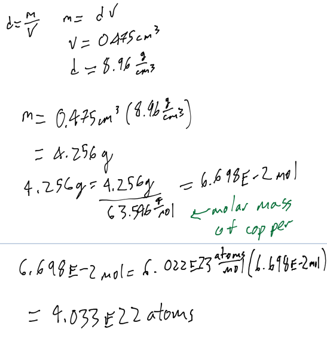
Chapter 3
- Audio 0:18:47.526137
Properties of Waves
- Audio 0:19:09.721677
- 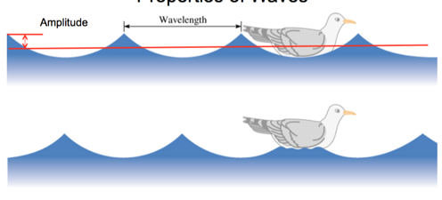
- Wavelength (λ) is the distance between identical points on successive waves.
- Amplitude is the vertical distance from the midline of a wave to the peak or trough.
- Audio 0:20:20.914304
- 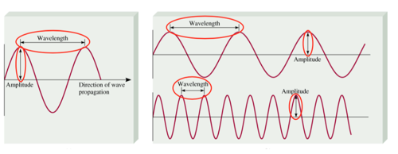
- Frequency (ν) is the number of waves that pass through a particular point in 1 second (Hz = 1 cycle/s).
- Audio 0:21:32.710413
- The speed (v) of the wave = λ x ν
Light
- Audio 0:23:42.023732
- 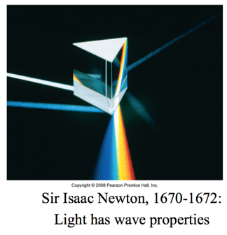
Amplitude and Wavelength
- Audio 0:24:52.722734
- Wavelength and amplitude are independent properties.
- The wavelength of light determines its color (intensive physical property).
- The amplitude, or intensity, determines its brightness (extensive physical property)
- Brightness dependent on amplitude
- 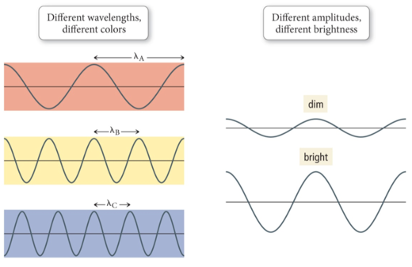
Color
- Audio 0:26:15.944132
- The color of light is determined by its wavelength or frequency.
- White light is a mixture of all the colors of visible light.
- A spectrum
- Red Orange Yellow Green Blue Indigo Violet
- When an object absorbs some of the wavelengths of white light and reflects others, it appears colored; the observed color is predominantly the colors reflected.
Maxwell
- Audio 0:26:23.185612
- Maxwell (1873), proposed that visible light consists of electromagnetic waves.
- 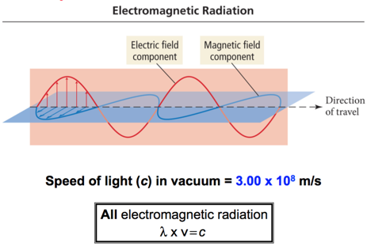
Electromagnetic Spectrum
- Audio 0:29:13.853883
- 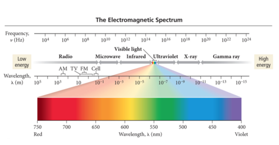
Example problem
- Audio 0:30:56.499318
- An electromagnetic wave has a frequency of 6.0 x 10^4 Hz. Does this frequency fall in the visible region? Convert this frequency into wavelength (nm).
- 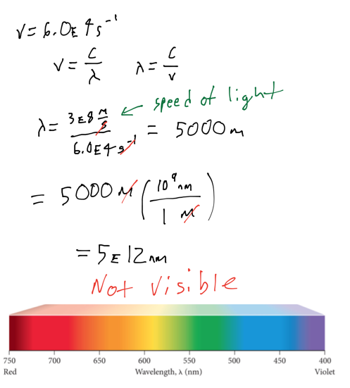
Clicker Question
- Audio 0:34:13.178546
- What is the wave length of a wave with frequency 8.6 * 10^13 Hz?
- 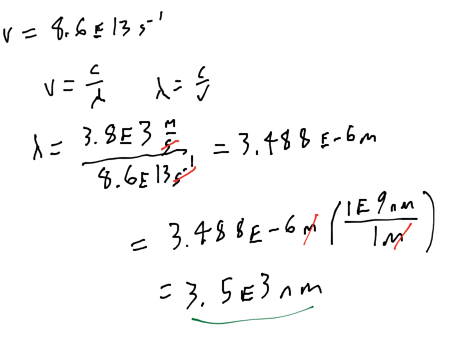
Einstein and the Photoelectronic Effect
- Audio 0:39:00.844561
- Hertz observed that when (some) light shines on a metal surface, electrons are produced from the surface.
- The electrons emitted from the metal surface are photoelectrons.
- This phenomenon is called the photoelectric effect.
- 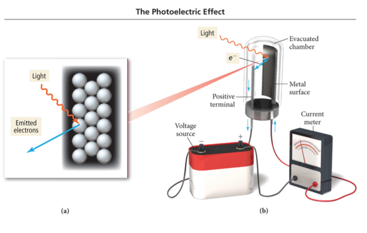
- Audio 0:40:20.734175
- Number of electrons depends upon light intensity
- More Kinetic energy at higher frequency of light
- Emission has a frequency threshold, below which there are no electrons
- 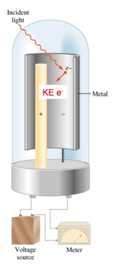
Explaining the Photoelectric Effect
- Audio 0:42:05.218727
- Classic theory explanation:
- The photoelectric effect according to classic wave theory attributed the electrons’ being emitted from the metal surface to the light energy being transferred to the electrons.
- Classic theory states the following:
- If the wavelength of light is made shorter or the light wave’s intensity is made brighter, more electrons should be ejected.
- Energy of a wave is directly proportional to its amplitude and its frequency.
- Example: If a dim light is used there should be a lag time before electrons are emitted in order to give the electrons time to absorb enough energy.
Explaining the Photoelectric Effect
- Audio 0:42:13.093629
- Einstein’s explanation: Quantum theory
- Experimental observations indicate the following:
- A minimum frequency was needed before electrons would be emitted regardless of the intensity called the threshold frequency.
- High-frequency light from a dim source caused electron emission without any lag time.
- Experimental observations indicate the following:
Einstein’s idea: “Light Is Quantized.”
- Audio 0:43:33.274758
- Ejection of electrons from a metal surface by light:
- One photon at the threshold frequency gives the electron just enough energy for it to escape the atom.
- Binding energy, φ
- When irradiated with a shorter wavelength photon, the electron absorbs more energy than is necessary to escape.
- This excess energy becomes kinetic energy of the ejected electron.
- Where (hυ) is a quantized packet of energy
Explaining the Photoelectric Effect
- Einstein’s explanation: Quantum theory
- Einstein proposed that the light energy was delivered to the atoms in packets called quanta or photons.
- Energy = (hυ)
- hυ = quanta
- Energy = (hυ)
- The energy of a photon of light is directly proportional to its frequency.
- E = hc/λ
- Or it is inversely proportional to its wavelength.
- Symbols:
- Planck’s Constant, (h) is a proportionality constant with a value of h = 6.626 × 10−34 J · s.
- Speed of light (c) value is 3.00 × 108 m/s
- Einstein proposed that the light energy was delivered to the atoms in packets called quanta or photons.
Black Body Radiation
- Audio 0:46:37.258672
- 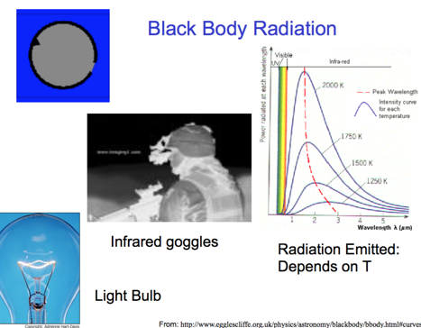
- If you heat something up in the dark, you can see it with infrared radiation
- “Black Body Problem” Solved by Planck in 1900 “… an act of despair … I was ready to sacrifice any of my previous convictions about physics …” Energy (light) is emitted or absorbed in discrete units (quantum).
- 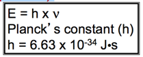
Vocab
| Term | Definition |
|---|---|
| Wavelength | the distance between identical points on successive waves |
| amplitude | the vertical distance from the midline of a wave to the peak or trough |
| frequency | the number of waves that pass through a particular point in 1 second (Hz = 1 cycle/s) |
| photoelectric effect | describes the phenomenon in which light shines on a metal surface and electrons are produced from the surface |
| threshold frequency | minimum frequency needed before electrons are emitted |
| quanta (photons) | the packets of energy that light travels with |
| planck’s constant (h) | 6.626 * 10^-34 J s |
| speed of light (c) | 3 * 10^8 m/s |